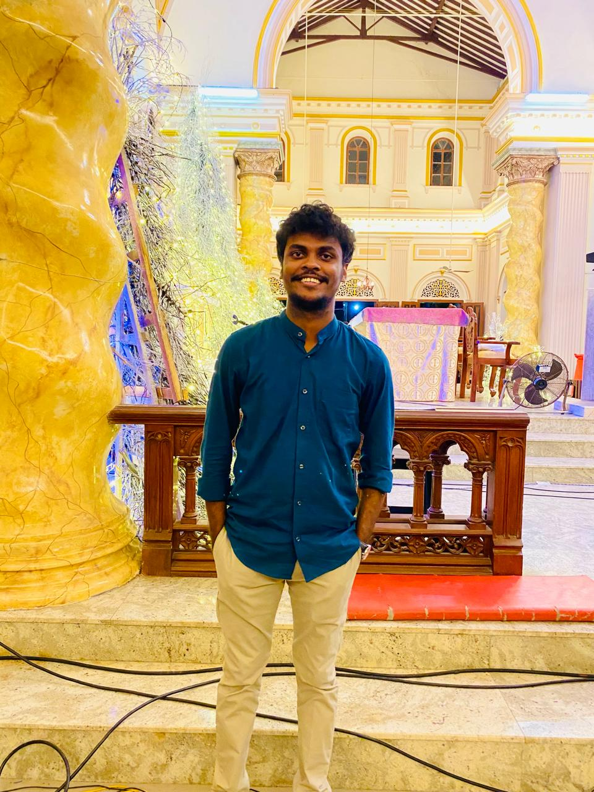
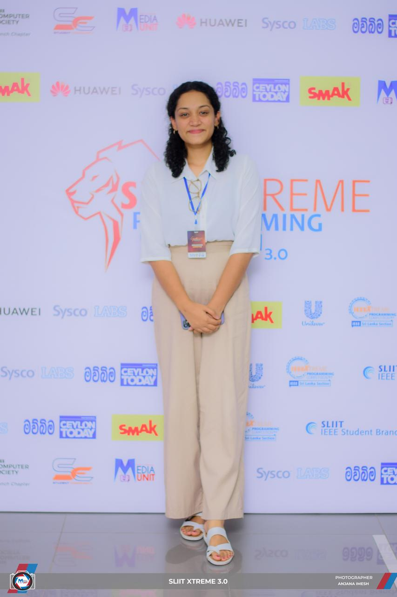

Supervisor
MG
Ms. Manori Gamage
Department of Information Technology · SLIIT
Leading the team's research direction and providing methodological guidance across all four modules.
A team of four IT specialists at SLIIT, supervised by experienced researchers, working at the intersection of traditional Ayurvedic medicine and modern artificial intelligence.
Department of Information Technology · SLIIT
Leading the team's research direction and providing methodological guidance across all four modules.
Department of Information Technology · SLIIT
Co-supervising the project with focus on technical implementation and evaluation strategy.
Each member leads a dedicated component of the Arogya system, contributing distinct expertise toward a unified solution.

Building the constitutional-aware disease prediction module — integrating Prakriti and tridosha imbalance with ML classifiers for personalised diagnosis.
Designing the herbal recommendation module — extracting disease-herb relationships from classical texts and training multi-factor ML classifiers.

Developing the dietary recommendation module — combining rule-based logic with KNN, Random Forest, and SVM for context-aware, personalised meal plans.
Building the multi-script OCR + Hybrid RAG pipeline — enabling Sinhala, English, and Singlish queries over classical Sanskrit Ayurvedic manuscripts.